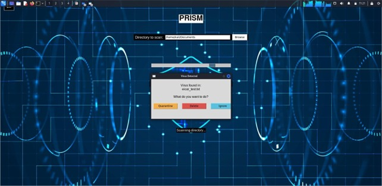

PRISM – Linux-Based Malware Detection Tool PRISM is a custom-built malware detection software designed to scan and analyze files in Linux environments. It uses a pattern and signature-based detection approach, integrating two powerful open-source tools: ClamAV and YARA.
Signature-Based Detection: Uses pre-defined malware signatures to detect known threats.
Pattern Matching: Scans files for suspicious byte sequences, strings, or behaviors based on custom rules.
Modular Design: Written in Python, making it easily maintainable and extensible.
Command-Line Interface: Enables users to perform scans on specific files or directories.
ClamAV (Clam AntiVirus): An open-source antivirus engine used to detect viruses, trojans, and malware. PRISM uses ClamAV to perform deep scans of the file system. It detects threats by matching files against a constantly updated virus signature database.
YARA (Yet Another Recursive Acronym): A tool used to identify and classify malware by creating custom rules. PRISM uses YARA rules to detect advanced threats and targeted malware based on file content, strings, and binary patterns. Especially useful for detecting new or polymorphic malware that may not yet be in ClamAV's database.
User initiates a scan via the command line. ClamAV runs a traditional scan, flagging any known malware based on its signature database. YARA then runs custom rules to detect anomalies or suspicious patterns not caught by ClamAV. The results are compiled and displayed, showing malware name, file path, and detection method.
Combines the reliability of ClamAV with the customizability of YARA.
Offers both broad signature detection and fine-tuned rule-based detection.
Lightweight and optimized for Linux systems.
Ideal for cybersecurity students, researchers, and system administrators.
Copyright © Muthu SK